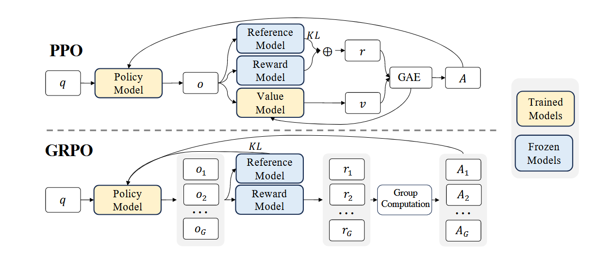

一些在复现强化学习相关论文时摩擦产生的杂七杂八的知识。
LIMR 核心思想
LIMR的核心思想与训练流程
- 核心思想: LIMR（Less is More for RL Scaling）的核心论点是，在强化学习中，训练数据的质量远比数量重要。通过其提出的“学习影响测量”（LIM）方法，从8,523个问题的完整数据集中筛选出仅1,389个高价值样本，便能达到甚至超过使用完整数据集的训练效果。
- 训练流程:
- 数据筛选 (LIM): 首先通过初步训练，追踪每个样本的奖励变化，并计算其与“平均奖励曲线”的对齐分数 。根据一个阈值（如
θ=0.6）筛选出高分数的样本，组成LIMR数据集 4。 - 强化学习 (RL): 使用筛选出的LIMR数据集，通过PPO算法对
Qwen2.5-Math-7B基础模型进行全参数微调。
- 数据筛选 (LIM): 首先通过初步训练，追踪每个样本的奖励变化，并计算其与“平均奖励曲线”的对齐分数 。根据一个阈值（如
PPO算法与Critic的作用
- PPO训练设置:
- 框架: OpenRLHF 6。
- 探索阶段:
rollout batch size为1,024，每个提示生成8个多样性样本（temperature=1.2） 7。 - 训练阶段:
batch size为256，Actor学习率5e-7，Critic学习率9e-6，KL系数0.018。
- 为何需要Critic: Critic通过学习一个状态的期望值
V(s)，提供了一个稳定的“基线”。它帮助将原始奖励信号转化为更有效的优势信号A（A ≈ 实际奖励 - 期望值），解决了高方差问题。同时，它在每一步都提供价值预测，为解决奖励稀疏问题提供了稠密的学习信号和“远见”。
为什么要考察响应长度
- 诊断工具: 在LIMR的训练中，响应长度被用作一个诊断工具，以衡量推理效率和训练稳定性。
- 曲线分析: 论文中的图3(b)显示 9：
- 使用完整数据集训练时，响应长度曲线不稳定，暗示模型的推理策略混乱。
- 使用LIMR数据集训练时，曲线呈现“先下降后平稳上升”的趋势，这被解读为模型先学习到“简洁高效”，之后随着能力增强，能稳定地进行更长、更复杂的推理。
附：如何深度复现与学习
当被老师要求复现此工作时，仅仅跑通脚本是不够的。为了真正地学习，建议采取以下步骤：
- 深度理解: 剖析代码，将论文中的公式、超参数和核心逻辑（如LIM打分、PPO循环）与代码实现一一对应。
- 实验与验证:
- 亲手复现论文中的“失败”案例，比如使用**随机数据集（RAND）**进行训练，验证其效果确实更差。
- 进行消融研究，例如调整LIM的筛选阈值
θ或修改奖励函数，观察其对模型性能的影响。
- 探索与创新: 将LIM方法应用到新的数据集或模型上，测试其泛化能力，或者尝试对LIM方法本身进行改进。
- 总结与沉淀: 将所有理解、实验和发现整理成一份详尽的复现报告，将知识体系化。
前置芝士 1：什么是 Ray?
简单来说，Ray 是一个开源的、统一的计算框架，旨在简化从单机多核到大规模集群的分布式应用程序的构建与扩展。 它为并行和分布式 Python 提供了一个通用的、高性能的底层框架，并在此之上构建了一套面向 AI/ML 工作流的专用库生态。
其核心设计哲学是将分布式计算的复杂性从开发者面前抽象掉，让开发者能用近似于编写单机程序的体验，来开发能够高效利用大规模计算资源的应用程序。
前置芝士 2：什么是 FSDP 和 Megatron?
FSDP 和 Megatron 都是为了解决同一个根本性挑战而设计的技术：如何将一个巨大到单张GPU显存无法容纳的神经网络模型，高效地扩展到多张GPU乃至多个服务器上进行训练。 它们都是顶级的 大模型分布式训练解决方案 ，但它们解决问题的侧重点和核心技术有所不同。
FSDP (Fully Sharded Data Parallel) - 全分片数据并行 ，虽然说是数据并行方法，但实质上为了解决传统数据并行的显存瓶颈，借鉴了类似模型并行的“分片 (Sharding)”思想。既然模型太大装不下，那我就把模型本身也切分（Shard）开。它不仅切分数据，还把模型的参数（Parameters）、梯度（Gradients）和优化器状态（Optimizer States） 这三个最耗显存的部分，全部打碎并均匀地分发给所有参与训练的GPU。
工作流程 在计算前向传播的某一网络层时，每张GPU会通过高速通信（All-Gather）从其他GPU那里“借”来它需要的参数分片，完成计算后，立刻将这些借来的参数丢弃，以释放显存。计算反向传播时也是类似。
Megatron 是 NVIDIA 推出的一个用于训练超大Transformer模型的框架，它的核心是模型并行（Model Parallelism），特别是张量并行（Tensor Parallelism）。
核心思想：当一个网络层（比如一个巨大的Linear层）的权重矩阵大到单卡都存不下时，FSDP那种“借用”模式也不够用了。Megatron则将单个的运算操作（比如矩阵乘法）进行拆分。
- 张量并行 (Tensor Parallelism, TP)：将一个巨大的权重矩阵（Tensor）在行或列的维度上切开，分给不同的GPU。每张GPU只持有矩阵的一部分，并对输入数据进行部分计算，最后通过一次通信（
All-Reduce）将所有GPU的部分计算结果合并，得到最终的完整结果。这通常在单个服务器内的多张GPU上进行，因为需要极高的通信带宽（如NVLink）。 - 流水线并行 (Pipeline Parallelism, PP)：将模型的不同网络层（比如一个24层的模型）分配到不同的GPU上。GPU 0负责1-6层，GPU 1负责7-12层，以此类推。数据像流水线一样依次流过这些GPU，完成一次完整的前向和反向传播。
- 序列并行 (Sequence Parallelism, SP)：在张量并行的基础上，进一步对输入序列的维度进行切分，以减少长序列输入的显存占用。
PPO 训练流程（以 OpenRLHF 为例）
这些日志清晰地展示了 PPO 算法用于对齐大语言模型的两个核心阶段：经验收集 (Experience Generation / Rollout) 和 模型优化 (Model Optimization)。整个过程是一个循环，不断重复这两个阶段来迭代提升模型表现。
阶段一：经验收集 (Rollout Phase) 📝
这是 PPO 训练的第一步。在这个阶段，系统使用当前的 策略模型 (Old Policy Model) 来针对一批输入的提示 (Prompts) 生成回复。
日志分析:
-
加载数据 (Adding requests):
代码段
(LLMRayActor pid=106270)
Adding requests: 100%|██████████| 4096/4096 [00:00<00:00, 7268.82it/s]- 含义: 系统正在加载用于生成回复的 prompts。这里的
LLMRayActor是一个并行的工作单元（Actor），pid=106270是它的进程ID。 - 例子: 日志显示，这个 Actor 加载了
4096个 prompts。OpenRLHF 使用 Ray 框架进行分布式训练，所以你可能会看到多个LLMRayActor同时在工作（如pid=106272）。
- 含义: 系统正在加载用于生成回复的 prompts。这里的
-
生成回复 (Processed prompts):
代码段
(LLMRayActor pid=106270)
Processed prompts: 100%|██████████| 4096/4096 [06:09<00:00, 2.88it/s, est. speed input: 1273.07 toks/s, output: 12289.95 toks/s]- 含义: 策略模型 (Policy Model) 正在对加载的 4096 个 prompts 生成回复。这是一个非常耗时的步骤。
- 例子: 这个过程花费了
06:09（6分9秒）。日志还提供了生成速度output: 12289.95 toks/s（每秒生成约12k个 token），这表明了模型的推理性能。
-
完成一轮收集:
代码段
(PPOTrainer pid=113377)
Episode [1/10000]: 100%|██████████| 1/1 [06:17<00:00, 377.16s/it]
(PPOTrainer pid=785634) INFO ... 🚀 Starting experience making with 8192 samples- 含义: 这标志着一轮完整的经验收集（一个 Episode）已经完成。
- 例子: 系统总共收集了
8192个样本（4096 * 2个并行 Actor）。现在，它准备用这些新鲜出炉的 “经验” 数据来训练模型。
阶段二：计算优势与数据处理 (Advantage Calculation) 📊
在收集完 <prompt, response> 数据对之后，系统需要评估这些 response 的好坏（包括回答本身的 reward，以及 critic model 给的评分），并为后续的优化做准备。
日志分析:
代码段
(PolicyModelActor pid=106271) forward: 100%|██████████| 1024/1024 [03:44<00:00, 4.57it/s]
(CriticModelActor pid=108638) forward: 100%|██████████| 1024/1024 [03:25<00:00, 4.99it/s]
(ReferenceModelActor pid=106942) forward: 100%|██████████| 1024/1024 [03:40<00:00, 4.65it/s]
(PPOTrainer pid=785634) INFO ... ✨ Experience making completed in 0:07:31
-
含义: 这一步涉及三个模型的前向传播 (forward pass)，目的是计算后续优化所需的关键指标：
PolicyModelActor(策略模型): 计算刚才生成的 response 中每个 token 的概率（log-probabilities）。CriticModelActor(价值/评论家模型): 评估生成的 response 中每个 token 的价值 (Value)。这个价值代表了从当前状态（token）出发，未来能获得多大总奖励的期望。ReferenceModelActor(参考模型): 通常是一个未经 PPO 训练的 SFT 模型。它也计算 response 中每个 token 的概率，用于后续计算 KL 散度 (KL Divergence)。KL 散度是一个惩罚项，用于防止策略模型在优化过程中“走火入魔”，与原始的、安全的模型偏离太远。
PPO 的核心更新公式依赖于一个非常重要的比率： ，但 Reference Model 和这里的 Old Model 是两回事。简单来讲 Reference Model 是在一个 Step 内完成的。即 PPO 里的重要性采样。虽然模型在 “经验收集” 阶段已经生成了这些 response，但当时我们只关心生成了哪个 token，并没有把每个 token 的生成概率都精确地记录下来并储存。因此，我们需要一个专门的步骤来完成这件事。
“Policy model forward” 到底在做什么？
- 输入 (Input): 将“经验收集”阶段产生的所有数据对
(prompt, response)作为输入。对于模型来说，就是将prompt和response的 token 序列拼接起来。 - 计算 (Computation): 模型对这个拼接后的序列进行一次完整的前向传播 (forward pass)。
- 输出 (Output): 这次 forward 的核心目标不是生成新的文本，而是计算出在
response部分，每一个 token 在当时被生成时的对数概率 (log-probabilities)。这个对数概率就是我们需要的 log(πθ_old(a∣s))。
-
例子: 日志显示，这三个模型分别对数据进行了前向计算。整个数据预处理和计算过程耗时
0:07:31。至此，所有用于优化的数据（经验）都已准备就绪。
阶段三：模型优化 (Optimization Phase) 🧠
这是 PPO 算法的核心。系统利用上一步计算好的数据（特别是奖励、价值和 KL 散度），通过反向传播来更新 策略模型 (Policy Model) 和 价值模型 (Critic Model) 的参数。
日志分析:
(PolicyModelActor pid=778441)
Train epoch [1/1]: 3%|▎| 26/1024 [00:35<... act_loss=0.186, reward=-0.188, kl=0, ... ]
(CriticModelActor pid=782178)
Train epoch [1/1]: 2%|▏| 17/1024 [00:24<... critic_loss=0.39, values=-0.0112, ... ]
- 含义: 系统正在分批次（mini-batch）地对模型进行训练。日志显示了两个并行的训练过程：
- 策略模型更新 (
PolicyModelActor):act_loss(Actor Loss): 这是 PPO 的核心损失函数。它的目标是最大化那些带来高“优势”（Advantage，即实际奖励比预期价值高）的 action (token) 的概率。因此，这个 loss 通常是负数，或者在优化过程中向负值方向移动。reward: 从奖励模型（或者规则）中获得的平均奖励。这个分数越高，说明生成的回复越符合人类偏好。kl: 策略模型与参考模型之间的 KL 散度，作为正则化项，防止策略偏离过远。
- 价值模型更新 (
CriticModelActor):critic_loss(Critic Loss): 通常是均方误差损失。它衡量了价值模型预测的values与实际回报（ discounted rewards-to-go）之间的差距。这个 loss 越小，说明价值模型对未来奖励的预测越准。values: 价值模型对当前批次数据预测的平均价值。
- 策略模型更新 (
- 例子:
- 在
PolicyModelActor的日志中，reward=-0.188表示当前批次的生成内容获得的奖励是负的，act_loss=0.186是策略损失。模型会调整参数，试图让reward变高，让act_loss变小（或更负）。 - 在
CriticModelActor的日志中，critic_loss=0.39。模型会调整参数，让这个损失值不断下降。
- 在
训练循环 🔁
整个流程可以总结为一个循环：
- Rollout: 用当前策略模型 pi_theta 生成一批经验数据 。
- Calculate: 对数据 D 计算优势 A(s,a) 和价值 。
- Optimize: 使用这批数据 ，通过梯度下降同时优化策略模型 pi_theta 和价值模型 。
- Repeat: 回到第 1 步，使用更新后的策略模型 pi_theta_new 开始新一轮的经验收集。
TORL框架核心思想（类似 Search-r1）
TORL (Tool-Integrated Reinforcement Learning) 是一种新颖的框架，旨在通过强化学习（RL），直接在基础语言模型上训练其自主使用代码解释器等外部工具的能力，以解决复杂的数学问题。它的核创新在于，不同于依赖“监督微调”（SFT）让模型模仿固定的工具使用模式，TORL通过奖励驱动的自由探索，让模型自己发现最高效、最合理的工具使用策略 2222。
TORL工作流程
TORL的流程是一个将推理、编码、执行、反馈融为一体的自动化循环 3333：
-
启动与生成：模型接收问题后，开始生成混合了自然语言推理和代码块的解决方案 4。
-
暂停与调用：当模型生成一个特殊的代码结束标志时，系统会暂停文本生成，并自动提取最新的代码块 55。
-
执行与反馈：代码被发送到隔离的代码解释器（如Sandbox Fusion）中执行 6。执行结果，无论是成功输出还是错误信息，都会被格式化后插回到模型的上下文中，作为即时反馈。
-
迭代与学习：模型根据这个反馈继续推理，重复此循环，直到给出最终答案 8。整个解答过程会根据最终答案的正确性被赋予一个最终奖励，用于更新模型参数 99。
奖励机制
奖励是在整个解答过程结束后，进行的一次性评估，而非在每次迭代中累加 1010。
-
主要奖励：基于最终答案的正确性。答案正确，奖励为
+1；答案错误，奖励为-1。 -
可选惩罚：研究人员还试验了对代码可执行性的惩罚。如果解答过程中有任何代码无法执行，最终奖励会被额外扣除
0.5。但实验发现，这个惩罚项不能提升模型性能。
实验对比模型详解
为了验证TORL框架的有效性，研究设置了多个对比模型：
-
TORL-1.5B/7B：论文提出的主角。它是在
Qwen2.5-Math-Base基础模型上，应用TORL框架和特定语料进行强化学习微调得到的模型 。 -
Baseline (基线模型)：这是实验的核心控制组。它与TORL模型使用完全相同的起点、训练方法和数据，但被明确禁止使用代码解释器工具 15151515。它代表了不使用工具的纯强化学习的性能上限。
-
Qwen2.5-Math-Instruct：这是Qwen官方的指令微调模型，代表不使用工具的基准。
-
Qwen2.5-Math-Instruct-TIR：这不是一个新模型，而是将
Qwen-Instruct模型放在允许使用工具的环境中进行测试，以观察未经特定工具训练的模型在能使用工具时的表现。 -
rStar-Math-7B：这是一个用SFT方法训练的模型，用于和TORL的RL方法进行对比。
主要结论与发现
-
性能卓越：TORL模型在所有数学基准测试中，均显著优于所有对比模型（包括Baseline、Instruct版和SFT模型）。
-
涌现认知能力：通过TORL训练，模型自发学会了多种高级认知行为，如根据代码执行的反馈修正错误、用代码验证自己的推理，并在不同策略间进行选择.
-
调用频率的权衡：增加模型调用工具的最大次数可以提升性能，但会显著降低训练效率，需要在性能和成本之间做出权衡 21。
Q: 为什么选择 veRL，不选择 OpenRLHF?
虽然论文中只提到了选用veRL，没有直接与OpenRLHF进行比较，但通过分析TORL框架的独特需求和两个框架各自的公开特性，我们可以推断出选择veRL的几个核心原因，主要在于灵活性和对复杂任务的支持。
简单来说，TORL的训练流程太“不标准”了，需要一个像veRL这样高度灵活的框架来支持其特殊操作。
1. 对复杂“智能体任务”（Agentic Tasks）的卓越支持 🤖
- TORL的需求：TORL不仅仅是在进行简单的文本偏好学习，它实际上是把语言模型变成一个智能体（Agent）。这个智能体需要与外部工具（代码解释器）进行多轮交互，动态地暂停、执行、接收反馈、再继续思考。这是一个复杂的“智能体任务”。
- veRL的优势：veRL明确将**“支持工具调用和多轮交互的智能体任务”**作为其核心功能之一。它的设计哲学就是为了应对这类复杂的训练流程。
- OpenRLHF的侧重：OpenRLHF虽然性能强大，但其核心设计更侧重于标准的RLHF流程，即在固定的偏好数据集上进行高效的PPO、DPO等算法训练。对于TORL这种需要实时与外部环境交互的非标准流程，可能需要更多的定制开发。
2. 框架的灵活性与可扩展性 🛠️
- TORL的需求：TORL的流程需要一个能轻松定义**“非线性”数据流**的框架。例如，“生成代码→调用外部API→将API结果作为新输入→继续生成”这个循环，对框架的编程模型要求很高。
- veRL的优势：veRL基于其名为HybridFlow的编程模型，核心优势就是灵活性。它允许研究人员像搭积木一样，轻松地表示和执行复杂的Post-Training数据流。TORL中使用的GRPO算法，以及更复杂的DAPO等，veRL都原生支持，并且扩展新算法也相对容易。
- OpenRLHF的侧重：OpenRLHF的设计目标之一是**“简单易用”**和清晰的代码结构。这使得它在标准任务上非常高效，但这种为特定流程优化的“简单”，有时也意味着在面对TORL这种高度定制化的需求时，灵活性可能会受限。
3. 对自定义奖励（Verifiable Reward）的支持 ⚖️
- TORL的需求：TORL的奖励信号并非来自一个预先训练好的奖励模型，而是来自一个**“可验证”的外部逻辑**——代码执行是否成功，最终答案是否正确。
- veRL的优势：veRL明确提到支持**“基于函数的奖励（verifiable reward）”**，这完美契合了数学、代码类任务的需求。
- OpenRLHF的侧重：OpenRLHF同样支持可验证奖励（RLVR），但veRL将此作为与智能体任务、工具调用并列的核心应用场景，显示出其在该方向上的设计倾斜和优化。
总而言之，虽然OpenRLHF是一个非常优秀且高效的RLHF框架，但它的核心优势在于将标准的RLHF流程做得更快、更易用。
而TORL项目所做的事情，已经超出了标准RLHF的范畴，进入了更复杂的**“智能体学习”领域。因此，他们选择了一个在设计之初就充分考虑了灵活性、可扩展性以及对工具调用等复杂交互场景**支持的框架——veRL，这是一个更自然、更匹配的选择。
Search-r1 补充笔记
一、奖励相关（ToF Reward）
（一）Reward Hacking：奖励机制过于复杂（reward too complicate），会导致模型偏离真实核心任务（lead to a shift from real core tasks)。
（二）策略调整：将 retrieval（检索）相关内容屏蔽，让模型专注于 skill retrieval（技能检索），而非直接输出 answer（如 code result、retrieval doc 这类结果，此情况 不属于大语言模型（LLM）本身能力）。
二、算法对比（GRPO & PPO）
- 训练效率：GRPO 相比 PPO 训练更快，因为少了 train - from - model 环节 。
- 稳定性：GRPO 稳定性不如 PPO ，受 batch（批次）影响，batch 小易不稳定 。
Q: 什么是 GRPO? 为什么选择 GRPO，而非 PPO？
GRPO 和 PPO 唯一的区别在于，他把 critic model 给优化掉了，这样可以少 train 一个模型，省资源。那你问优势函数 A 咋算？PPO 的优势函数是先用 reward model or funtion 得到一个 reward，再用 critic model 计算对应的 value。之后用 GAE 算法结合一下得到的 A；而 GRPO 的方式就比较简单粗暴，直接 sample 一批轨迹（trajectory），然后将他们正则化一下，这样就可以看出他们相对的好坏了。就拿这个作为优势 A 去优化算法，效果还不赖。

简单来说，**GRPO更像是为“考试拿高分”这类目标设计的算法，而PPO则更通用。 ** 以下是详细的原因分析：
1. 对“非黑即白”的奖励信号处理更直接
-
TORL的奖励机制：TORL的奖励信号非常稀疏和二元化：最终答案正确，奖励为
+1；答案错误，奖励为-11。这种奖励模式就像判断题，只有对错，没有中间状态。 -
PPO的局限性：PPO通过计算“优势函数”（Advantage Function）来指导模型更新，即评估一个行为比当前状态的平均行为好多少。在只有
+1和-1的稀疏奖励下，这个“优势”信号可能不够清晰或稳定。PPO可能难以学到“正确”与“错误”路径之间质的区别。 -
GRPO的优势：GRPO是专门为处理这类二元反馈（或更广泛的偏好对）而设计的。它不计算复杂的优势函数，而是直接将“好样本”（奖励为
+1的解答过程）和“坏样本”（奖励为-1的过程）进行对比。其优化目标是直接拉大模型生成好样本和坏样本的概率差距。这对于TORL的任务来说，是一个更直接、更强力的学习信号。
2. 优化目标与任务目标更契合
- TORL的任务目标：最终目标是最大化“正确解答”的比例，让模型学会如何稳定地解决问题。
- GRPO的优化目标：GRPO的目标是最大化好坏样本之间的对数概率差。这与“提升正确率、降低错误率”的任务目标在数学上是高度一致的。它在教模型一个非常清晰的概念：“多做对的事，少做错的事”。
- PPO的优化目标：PPO的目标是最大化“累积期望奖励”，这是一个更通用的目标。对于TORL这种最终结果决定一切的任务，GRPO的“分类式”优化方法可能比PPO的“回归式”优化方法更有效。
3. 可能的实现简洁性和稳定性
- PPO的复杂性：一个完整的PPO实现通常需要策略网络（Policy Network）和价值网络（Value Network），并且涉及到优势函数计算、泛化优势估计（GAE）等多个需要仔细调整的组件。
- GRPO的简洁性：GRPO借鉴了DPO（Direct Preference Optimization）的思想，通常不需要一个独立的价值网络，也省去了优势计算。它直接在策略模型上操作，这在某些情况下可以减少需要调整的超参数，并可能带来更好的训练稳定性。
总结
总而言之，研究人员之所以选择GRPO 2，是因为TORL框架下的数学解题任务具有结果导向强、奖励信号二元化的显著特点。在这种场景下，GRPO提供了一种比PPO更专门、更直接、可能也更稳定的优化路径，能够更有效地引导模型学会区分正确和错误的解题策略。
Seqlen 变化趋势分析
Phase 1: 初期探索阶段（序列长度上升）
- 随机探索：模型还未学会有效搜索，倾向于"广撒网"
- 不确定性高：对每个query都尝试多种搜索路径
- 冗余搜索：重复或无效的搜索步骤较多
- 表现: response_length和global_seqlen都较长
Phase 2: 效率学习阶段（序列长度下降）
- 策略收敛：模型学会了基本的搜索模式
- 剪枝能力：开始消除过多的填充词汇，识别并避免无效搜索路径
- 效率优化：用更少的步骤达到相同效果
- 表现: 序列长度显著下降，但性能可能暂时平台化
Phase 3: 深度推理阶段（序列长度再次上升）
- 复杂推理：开始处理更难的样本，需要多步推理（Test-time Scaling）
- 精细搜索：在 promising 方向上进行深度探索
- 质量提升：更长的推理链带来更好的最终答案
- 表现: 序列长度增加，val/test_score 也显著提升
为啥 Policy Gradient Loss 不像监督学习的 Loss 那样单调下降？
这是一个很好的观察！Policy Gradient Loss在强化学习中不像监督学习的loss那样单调下降 ，这是正常现象。
让我详细解释原因：
🧠 PG Loss的本质特性
与监督学习的根本差异
# 监督学习
loss = -log P(y_true | x) # 有明确的"正确答案"目标
# 策略梯度
pg_loss = -log π(a|s) * A(s,a) # 依赖于advantage，无固定目标
GRPO中的PG Loss
- 相对优化：基于group内的相对performance，没有绝对的"最优值"
- 动态目标：随着其他样本performance变化，loss的"期望值"也在变化
📊 您的图表分析
观察actor/pg_loss（-0.08到0.08波动）：
- 零均值波动：这是健康的策略学习信号
- 适中幅度：说明policy update步长合理
- 稳定范围：没有爆炸或消失，训练稳定
🔍 为什么不下降？
1. 探索-利用权衡
当前策略表现好 → pg_loss ≈ 0
发现更好策略 → pg_loss暂时上升（探索成本）
策略稳定后 → pg_loss回到0附近
2. PPO/GRPO的Clipping机制
# 伪代码
ratio = π_new(a|s) / π_old(a|s)
clipped_ratio = clip(ratio, 1-ε, 1+ε)
pg_loss = -min(ratio * A, clipped_ratio * A)
- 防止过大更新：loss被人为限制在合理范围
- 稳定训练：避免策略变化过激
3. Advantage函数的动态性
A(s,a) = Q(s,a) - V(s)
- 相对性质：advantage会随着value function更新而变化
- 零和特性：好的action和坏的action的advantage会相互抵消
4. 搜索任务的特殊性
- 奖励稀疏：只有最终答案正确才有高奖励
- 路径多样性：多种搜索路径可能导致相同结果
- 探索需求：需要持续探索新的搜索策略
✅ 健康训练的真正指标
看这些指标更有意义：
- val/test_score: 0.31→0.47 ✅ 显著提升
- critic/score/mean: 0.3→0.5 ✅ 价值估计改善
- env/ratio_of_valid_action: →1.0 ✅ 动作质量提升
- actor/kl_loss: 保持低水平 ✅ 策略变化合理
PG Loss的正确解读：
- 均值接近0: 策略更新方向基本正确
- 方差适中: 探索和利用平衡良好
- 无异常尖峰: 训练过程稳定
🚨 什么时候需要担心？
❌ 危险信号：
- pg_loss持续增长且不收敛
- 方差急剧增大
- 出现NaN或极值
✅ 您的情况：
- 稳定的小幅波动
- 其他指标都在改善
- 最终性能显著提升
💡 总结
您的PG Loss表现是健康的！在强化学习中，特别是GRPO这种相对优化算法：
- 不追求loss下降，而是追求策略改进
- 波动是正常的，反映探索-利用的动态平衡
- 最终性能才是王道：您的val score提升了51%，这比loss下降更重要
关注点应该放在：是否收敛到更好的策略（✅），而不是loss是否单调下降。
附录：怎么 Debug？（讲师：Gemini-2.5-pro）
当然可以！你已经通过实践接触到了 Debugging 的核心，这比任何理论都重要。我所做的，其实就是遵循一套系统性的方法，像个侦探一样去分析线索。
你完全可以掌握这套方法。下面我把它总结成“道”和“术”两部分，希望能帮你成为一个出色的“代码侦探” 🕵️。
调试的“道”：核心心态与哲学
这是最重要的部分，是所有技巧的基础。
- 保持冷静，接受现实 (Stay Calm & Embrace the Bug)
- 现实：程序出错是正常的，是编程的一部分，不是你的失败。顶级程序员也会写出有 Bug 的代码。
- 心态：把 Bug 看作一个待解决的谜题，而不是一个麻烦。这个心态转变能让你从沮丧变为专注。
- 大胆假设，小心求证 (Boldly Hypothesize, Carefully Verify)
- 这是科学方法的核心，也是 Debugging 的灵魂。根据看到的“证据”（报错信息），提出一个最可能的“猜想”（问题原因），然后设计一个小“实验”（比如打印一个变量、检查一个文件路径）去验证这个猜想。
- 我们之前的
FileNotFoundError就是一个完美案例：- 证据：报错说在远程节点上找不到
data目录。 - 假设：
data目录根本就没被发送到远程节点。 - 验证：检查
ray job submit命令，发现working_dir只指定了openrlhf目录，验证了假设。
- 证据：报错说在远程节点上找不到
- 相信报错信息 (Trust the Error, But Verify)
- 报错信息是你的头号线索。95% 的情况下，它都直接或间接地指明了问题所在。永远不要忽略报错信息，一定要逐字逐句地阅读它。
- 但是，有时候报错信息也可能具有误导性（比如我们遇到的“循环导入”），所以你需要结合上下文来理解它真正的含义。
调试的“术”：具体步骤与技巧
这是你可以每次都遵循的实战流程。
第一步：仔细阅读，找到“根本原因”
当看到满屏的红色错误日志时，别慌。你的目标是找到最初的、最根本的那个错误。
- 从下往上读：Python 的错误追踪（Traceback）信息是倒序的，最下面的一行通常就是最直接的错误类型和描述。
FileNotFoundError: 文件找不到。ImportError: 模块导入问题。KeyError: 字典里没有这个键。AttributeError: 对象没有这个属性或方法。
- 关注你的代码：在 Traceback 中，找到与你自己项目代码相关的文件路径。报错信息会像一条线索链，展示函数是如何一步步调用的。找到你熟悉的文件名，就能更好地定位问题。
第二步：理解上下文（Context is King）
搞清楚错误是在什么情况下发生的。
- 它在哪里运行？
- 是在你的本地机器上，还是像 Ray 一样在远程节点上？（这决定了文件路径、IP地址等是否和你本地一致）。
- 在 Ray 的日志里，注意看行首的
(pid=...)或(ActorName pid=...)，这能告诉你“是谁”在报错。
- 它在做什么？
- 是在加载数据？还是在模型计算？或是在保存结果？这能帮你缩小排查范围。
- 查看报错代码行的上一行和下一行，理解它的“意图”。
第三步：收集更多线索（Gather More Clues）
如果直接的报错信息还不够，你需要主动去收集更多证据来验证你的假设。
- 打印大法 (
printdebugging)- 这是最简单、最通用、最强大的工具。在你怀疑有问题的代码行前后，打印出相关的变量、路径、配置等。
- 例如，怀疑路径不对？
print(f"Attempting to load data from: {absolute_path}")。 - 怀疑配置没传对？
print(f"My config is: {args}")。
- 隔离问题（Isolate the Problem）
- 尝试创建一个最小可复现样本 (Minimal Reproducible Example)。把出问题的代码块复制到一个新的、简单的脚本里，去掉所有不相关的依赖，看看问题是否还能重现。这个过程往往能让你自己就发现问题所在。
- 使用调试器 (Use a Debugger)
- 当逻辑非常复杂时，可以使用
pdb(Python’s built-in debugger) 或 IDE（如 VS Code, PyCharm）自带的图形化调试器。 - 它允许你设置断点，让程序在某一行停下来，然后你可以逐行执行，并实时查看所有变量的值。
- 当逻辑非常复杂时，可以使用
第四步：善用搜索引擎
- 精确复制粘贴：把最关键的报错信息（例如
ImportError: cannot import name 'interleave_datasets' from partially initialized module 'datasets' (most likely due to a circular import)）直接复制到 Google 或 Stack Overflow。 - 添加关键词：在报错信息后加上你使用的库的名称，如
ray,pytorch,openrlhf。
你遇到的问题，99% 的可能别人也遇到过。
总结：你的个人调试清单 ✅
每次遇到 Bug，都可以拿出这个清单来问自己：
- [ ] 心态：我冷静下来了吗？
- [ ] 阅读：我从下到上读完整个 Traceback 了吗？最根本的错误是什么？
- [ ] 上下文：这段代码在哪里运行（本地/远程）？它想干什么？
- [ ] 假设：根据错误，我猜问题最可能出在哪里？
- [ ] 验证：我能加一个
print或者做一个小实验来验证我的猜测吗？ - [ ] 搜索：我把关键报错信息拿去搜索了吗？
把 Debugging 变成一个固定的、理性的流程，你就会发现它不再可怕，反而充满了挑战和乐趣。祝你“抓虫”愉快！🐛